This report documents the BFF cookie handshake, the Dev/Test FakeAuth bypass, and the API-facing status behavior that keeps browser and API clients on the right side of the redirect boundary.
FakeAuth
Maps X-Fake-User and X-Fake-Roles headers to a claims principal, and refuses to exist in Production.
Cookie BFF
HttpOnly, SameSite=Strict, Secure cookie named .PoSeeReview.Auth.
OIDC
Challenge uses Entra OIDC with issuer-shape validation against allowed tenants.
| Mode | Where it appears | Guard | Status logic |
|---|---|---|---|
| Cookie | /auth/me, authenticated API routes | Fallback policy requires auth | Redirects are suppressed to 401/403 for API clients. |
| OIDC | /auth/login/microsoft | Challenge via OpenIdConnectDefaults.AuthenticationScheme | Returns 503 when AzureAd:ClientId is missing. |
| FakeAuth | /auth/login/fake, test clients, non-prod auth header mode | Header-mapped scheme in Dev/Test only | /auth/login/fake returns 404 in Production. |
The rendered state diagram shows anonymous boot, fake/guest auth, Microsoft OIDC sign-in, cookie session establishment, and the web app’s anonymous static boot path before auth is discovered.
